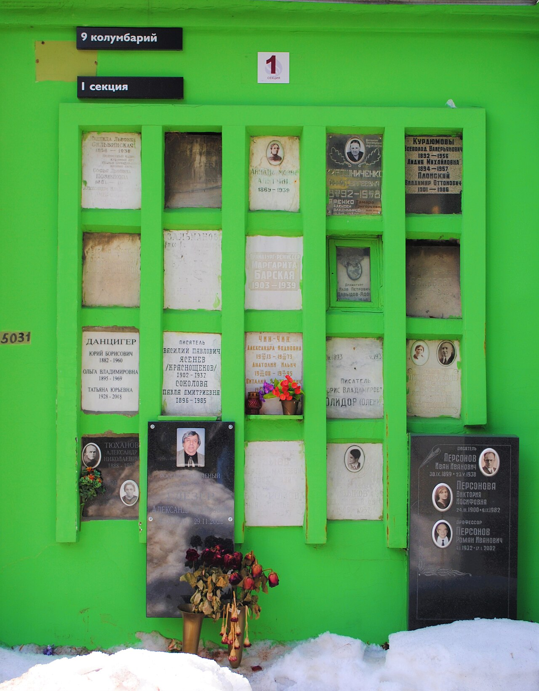
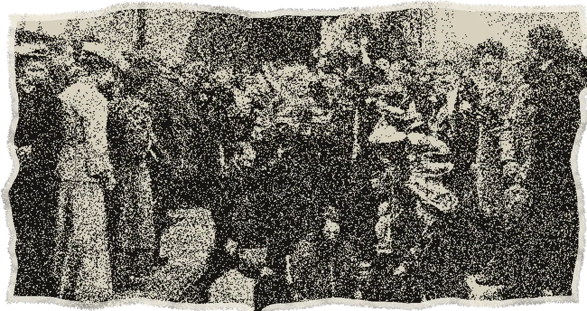
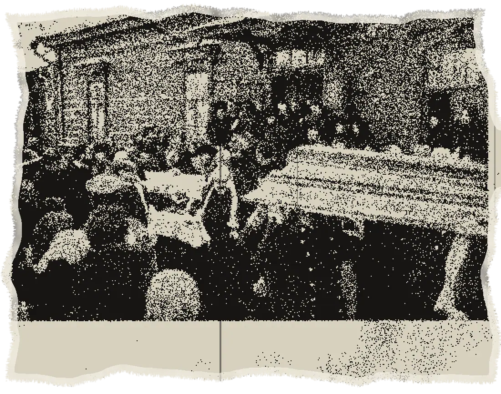
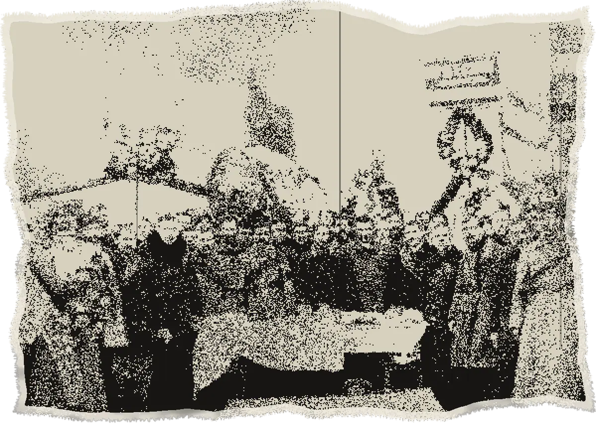

VOL. IV · PLATE K · 02 / 07
THE SOVIET AFTERLIFE
Cremation, the civil funeral, and the industry that followed
Civil funerals without a priest, cremation in a former church, and a funeral market, seen mostly through Moscow sources.
1920s–2020s · Moscow; St Petersburg; Russia · State secular ritual; Orthodox revival; commercial funeral services

K / 01
A crematorium in a church
Moscow’s first crematorium was fitted into a church building at the Donskoy Monastery, the church of St Seraphim of Sarov and St Anna of Kashin. A Moscow city-guide page calls it an unfinished church never consecrated before the revolution; an Orthodox website calls it a rebuilt church. According to the archive site Tehne, an exhibition of crematorium models at the Moscow Communal Economy museum in January 1925 was followed by a design competition; quoting a 1926 magazine, it names three entries (Dyakonov, Melnikov, Osipov), gives first prize to Osipov, and says the jury asked for a building that did not look like a church inside or out. A hobbyist page also names Dmitry Osipov as the architect of the conversion. The furnace, the Orthodox site writes, came from the German firm Topf and Sons.
The dates differ by a day or so. Sokolova gives 12 January 1927 as the opening; the hobbyist page gives a trial burning of a worker’s body on 11 January, and Tehne dates a first trial cremation to 29 December 1926. The official opening is 6 October 1927 in the Memorial database and on Tehne (which adds that the first scheduled cremation was held that day), 7 October on the hobbyist page.
The building was later used for the terror. Memorial’s Topos database records that bodies of people shot in Moscow were cremated at Donskoy, documented from 1934, with earlier cases possible, and that the ashes were buried in the New Donskoy cemetery.
K / 02
The civil funeral
A Soviet funeral had no priest. In the 1920s the ‘red funeral’ was a procession to the cemetery led by musicians, with Komsomol members carrying a red coffin, then flags and revolutionary songs, and at the grave a civil memorial service with an honour guard and speeches. Sokolova concludes that such funerals were rare in the 1920s, the political act of a narrow circle of young activists.
Her figures: in Moscow, 39.9% of funerals in 1925 and 40.4% in 1926 were held without a church service, so about six in ten still had one; in Tambov province, nine civil funerals in the first quarter of 1927 for the whole province. She writes that the 1960s brought a state campaign for socialist non-religious rites, with local commissions, and that funeral rites appear in only some of its guideline collections. The article was read in summary only.
The institutional secularization of death proceeded through distinct legal stages. The Council of People's Commissars decree of 7 December 1918 abolished church jurisdiction over cemeteries, placing burial grounds under municipal Soviets and initiating civil funeral ceremonies with orchestral accompaniment and revolutionary speeches. This bureaucratic monopoly reached its architectural culmination in 1927 with the Donskoy Crematorium. Following the collapse of the USSR, Federal Law No. 8-FZ of 12 January 1996 ('On Burial and Funeral Business') dismantled state monopoly: it established a state-guaranteed minimum service package (garantirovannyi perechen') for every citizen, while opening cemetery maintenance, transport, and monument fabrication to private commercial funeral enterprises.

| Date | Event | Source |
|---|---|---|
| 10 Oct 1723 | Decree: burial at churches in towns only for notable persons; not carried out | Rozanov (1868); Pravenc, ‘Nadgrobie’ |
| 1771–72 | Plague in Moscow; cemeteries opened outside the town, Vagankovo among them | Rozanov; Mos.ru, Vagankovo history |
| 1925 | Design competition for a Moscow crematorium | Tehne (quoting a 1926 magazine) |
| 12 Jan 1927 | Crematorium opens at Donskoy (a trial burning on 11 Jan per one page) | Sokolova (2013) |
| 6 Oct 1927 | Official opening | Memorial, Topos |
| from 1934 | Bodies of people shot in Moscow cremated at Donskoy (documented) | Memorial, Topos |
| 9 May 1960 | Piskaryovskoye memorial opened | Piskaryovskoye museum |
| 8 May 1967 | Tomb of the Unknown Soldier opened | Mos.ru / Glavarkhiv |
| March 1972 | Nikolo-Arkhangelsk crematorium completed, east Moscow | Guinness World Records |
| 12 Jan 1996 | Federal law ‘On Burial and Funeral Business’ | Federal Law no. 8-FZ |
K / 03
The funeral market, Moscow 1996–2012
The federal law of 12 January 1996 ‘On Burial and Funeral Business’ guarantees relatives a list of burial services free of charge, provided by a specialised service (Article 9). In June 2012 (21 June), The Moscow Times reports, the head of the city’s trade and services department said commercial functions, such as digging graves and transporting coffins, would pass from the municipal company Ritual to private firms. The same report puts the Moscow burial-services market at more than 12 billion rubles, cremation at 44% of Moscow burials, and the number of cemeteries at 71, only two of them open to new burials.
These are Moscow figures from one newspaper report and say nothing about the rest of Russia. The sources read do not cover the years 1991–95 or after 2012, and they do not show how church funerals returned.

K / 08
A temple of atheism, then a plant
A.D. Sokolova’s study of 1920s cremation argues that in the USSR the decision on disposing of the dead passed to the civil authorities, who started from sanitation. Even so, the first project, in Petrograd, was called a ‘Crematorium-Temple’ and aimed at creating a spiritual mood in the masses. By the second half of the decade, when the Donskoy crematorium was built in Moscow, her abstract says, the technology had come to matter more than the quasi-religious dress. The later history is thinner. A records entry describes the Nikolo-Arkhangelsk crematorium in east Moscow, completed in March 1972, with seven twin cremators and six halls of farewell. One hobbyist page says the Donskoy furnace closed in 1973 and was rebuilt as a church in 1990; another says real cremations went on there until 1973, then only ceremonial ones while the bodies were burned at Nikolo-Arkhangelsk, that the crematorium was finally closed in the 1990s and that services have been held since 1998; Tehne says the church was returned in 1992; a Moscow guide page agrees only that it stopped working in the 1970s and that the church received the main building in the 1990s. The atlas does not settle the year.





Apparatus sources · related plates · terms
Sources for this plate
- pravenc-nadgrobie Pravoslavnaia entsiklopediia (Orthodox Encyclopedia) — Nadgrobie (2000– (ongoing))
- vagankovo Mos.ru (official portal of the city of Moscow) — Material on the history of Vagankovo Cemetery (n.d.)
- mos-ru-unknown Mos.ru / Glavnoe arkhivnoe upravlenie goroda Moskvy — Material on the history of the Tomb of the Unknown Soldier (n.d.)
- pmemorial Piskaryovskoe Memorial Cemetery (museum website) — Vechnyi ogon (n.d.)
- sokolova2020 Sokolova, A. D. — Крематорий-храм, или кремация в советском похоронном обряде 1920-х годов (2020)
- guinness-nikolo Guinness World Records — Largest crematorium (n.d.)
- coldwarsites-donskoy coldwarsites.net (editor not named) — Donskoy Cemetery and Crematorium, Moscow (n.d.)
- rozanov-moscow-cemeteries N. P. Rozanov — O moskovskikh gorodskikh kladbishchakh (1868 (offprint from the June issue of Dushepoleznoe chtenie, 1868; censor’s permission dated 8 June 1868))
- sokolova2013-oz Sokolova, A. (initials ‘A. S.’ in the footnotes; name from the page title) — «Нельзя, нельзя новых людей хоронить по-старому!» (2013)
- tehne-first-crematorium tehne.com (archive site, quoting ‘Stroitelstvo Moskvy’, 1926, no. 5) — Первый московский крематорий и его значение (n.d.)
- topos-donskoe Memorial (Topos database) — Донское кладбище (Новое) (n.d.)
- filatov-pravoslavie Filatov, Nikita — Хоронить нельзя кремировать: из истории кремации в России (n.d.)
- yavarda-crematorium yavarda.ru (hobbyist site, author not named) — Первый московский крематорий (Донской крематорий) (n.d.)
- places-moscow-columbarium places.moscow — Колумбарий Первого Московского крематория (n.d.)
- law-8fz-1996 Russian Federation — Федеральный закон «О погребении и похоронном деле» от 12.01.1996 № 8-ФЗ (1996)
- moscowtimes-burial2012 The Moscow Times — Moscow burial services being privatized (2012)
- memorial-donskoy Memorial Society (Roginsky, A. et al.) — Execution Lists: Moscow, 1934–1953. Donskoy Cemetery, Donskoy Crematorium [Расстрельные списки: Донское кладбище] (2005)
- merridale2000 Merridale, Catherine — Night of Stone: Death and Memory in Russia (2000)
- mospravda-crematorium Moskovskaia pravda — Ognennoe pogrebenie (2017)
URLs, access dates and limitations are in the bibliography.
Related plates
Terms in this plate
Citation
Archaeology of Russian Death. Plate K: THE SOVIET AFTERLIFE. Cremation, the civil funeral, and the industry that followed // An Atlas of Material Culture and Ethnography. 2026. URL: https://DmitryLeLeE.github.io/rus_death/plates/k-soviet.html.